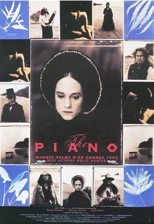

Explore film ↗The Piano
Jane Campion
DIRECTOR PROFILE
Dame Elizabeth Jane Campion (born (1954-04-30)April 30, 1954) is a New Zealand filmmaker whose accolades include two Academy Awards.

LIFE & CAREER
Dame Elizabeth Jane Campion (born (1954-04-30)April 30, 1954) is a New Zealand filmmaker whose accolades include two Academy Awards. From a feminist perspective, her films often explore themes such as female desire, sexuality, autonomy, and artistic expression, often portraying women’s pursuit of freedom and independence through their conflicts with patriarchy and tradition. Campion is best known for writing and directing the critically acclaimed films The Piano (1993), which earned her the Academy Award for Best Original Screenplay, and The Power of the Dog (2021), which earned her the Academy Award for Best Director, becoming only the third woman to win the award (after Kathryn Bigelow and Chloé Zhao).
Adapted excerpt from Wikipedia, CC BY-SA 4.0. Pronunciation notes omitted.
Read the full biographyImage: 9EkieraM1. Source & rights: CC BY-SA 3.0 ↗.
Profile reference: Director background ↗
Open this director checklist ↗
A selection of this director’s films available in the archive.

Explore film ↗Jane Campion